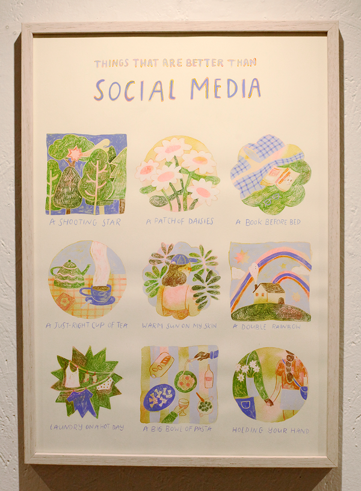

FUCK DEMETER - P.A.N. sets fire to the family home

The science of it all

stop making me fucking cry

Collections of You and I

things that are better than social media

Where is evil bred?
self love

residue

Self-love & Reflections

Little features

The dreamer

How we met

Philia Phobos

Be careful with my Heart

Tot de volgende keer (until next time)

Love Camo

Teenage fantasy

self portrait

I can love you now
lungs
sensitive creature

Love with Effort

Spinach and Ricotta Pastry + Nature Nature